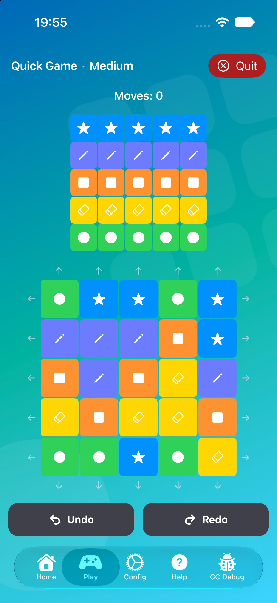
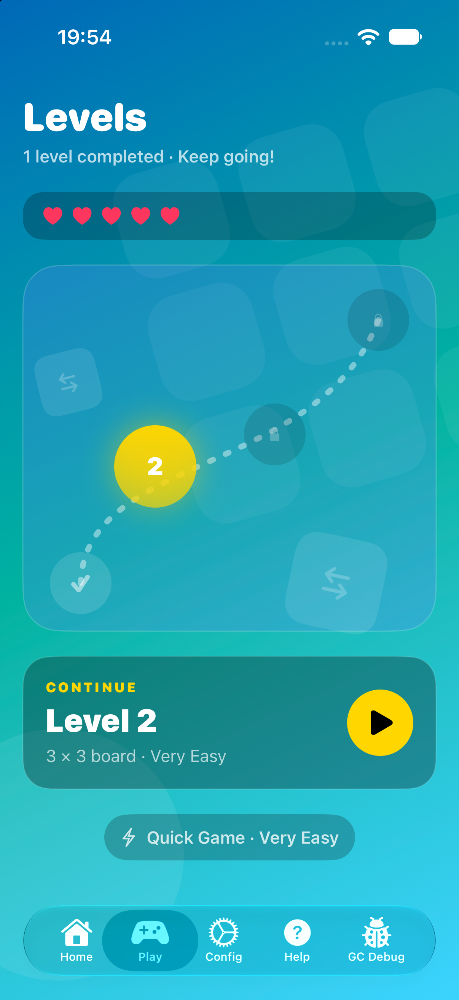
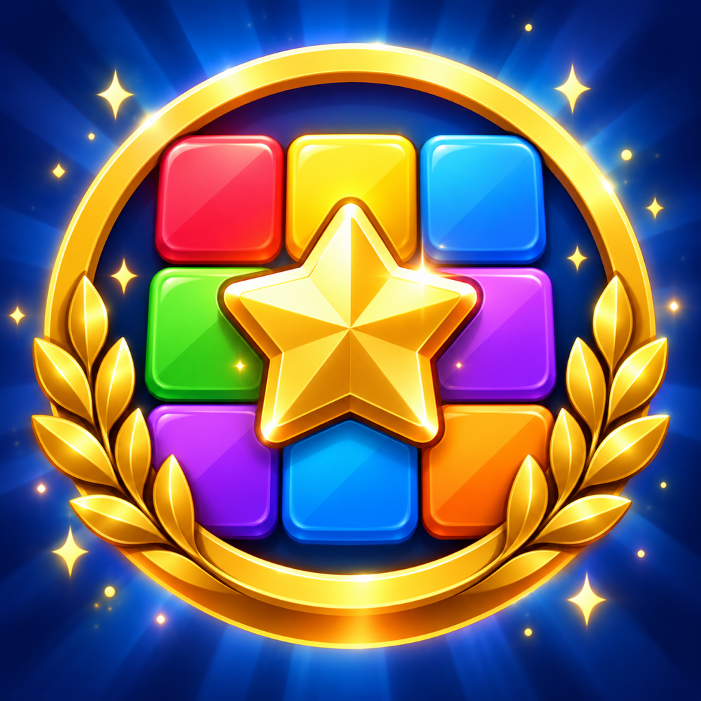
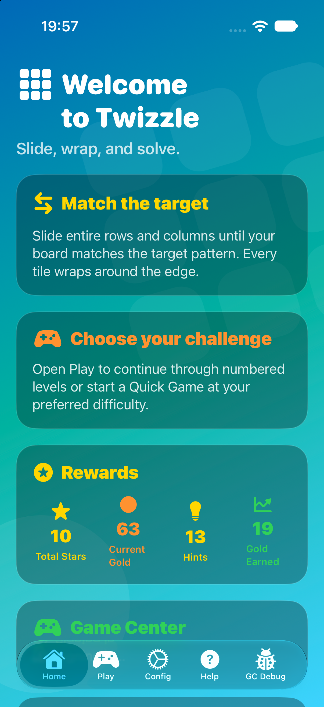

A COLOURFUL PATTERN PUZZLE
Twizzle
Slide a row. Shift a column. Bring a scattered board back into order, one thoughtful move at a time.
THE PLAYING BOARD
Simple moves.
Surprising possibilities.
Twizzle turns a grid of colourful pieces into a puzzle of patterns and planning. Every move shifts a whole row or column, so putting one piece in place can send another on a small detour. Finding how they fit together is the pleasure of the game.

HOW TO PLAY
Every edge is a way back in.
Swipe a row left or right, or a column up or down. Pieces that leave one edge reappear on the opposite side. Keep shifting until your board matches the target. Distinct symbols help you tell the pieces apart as well as their colours.
TWO WAYS TO PLAY
A quick puzzle.
A longer journey.
Choose a Quick Game at one of five difficulty settings, from Very Easy to Very Hard. Or work through numbered Levels, unlocking the next challenge as you go. Boards range from a compact 3 × 3 to a more demanding 6 × 6.
Quick Games let you take as many moves as you need and earn stars and gold for your solutions. Levels give you a move budget, with hints available when you need a fresh way to look at the board.

ROOM TO THINK
Try a different direction.
Undo and Redo let you explore how the pieces move together. In numbered Levels, a hint points out a next move without moving the board for you. Use gold earned in Quick Games to get more hints, extra moves or lives for your level journey.
Your current puzzle is saved on your device, ready to continue later. Permanent progress also syncs through your private iCloud account when available, while offline play remains available.
GAME CENTER
Small victories.
Shared milestones.
Earn achievements as you play, from your first Quick Game victory to a streak of three-star solutions. Game Center leaderboards let you compare your highest completed level and total gold earned in Quick Games with other players.

PREMIUM
A little more room to play.
Twizzle Premium raises your life capacity from five to eight, doubles the gold earned in Quick Games and adds a daily gold reward. It is an optional, one-time in-app purchase.
PRIVACY
Care in the details.
Twizzle does not collect personal information for Creative Crow and contains no ads. Read how saved progress, iCloud, Game Center and the optional Premium purchase are handled.
